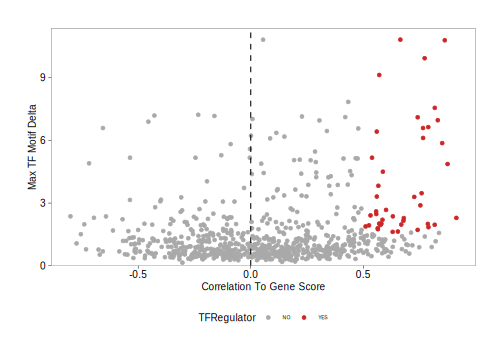
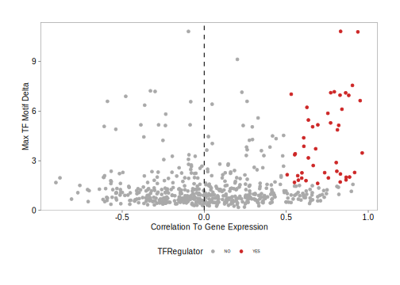

ATAC-seq allows for the unbiased identification of TFs that exhibit large changes in chromatin accessibility at sites containing their DNA binding motifs. However, families of TFs (for ex. GATA factors) share similar features in their binding motifs when looking in aggregate through position weight matrices (PWMs).
This motif similarity makes it challenging to identify the specific TFs that might be driving observed changes in chromatin accessibility at their predicted binding sites. To circumvent this challenge, we have previously ATAC-seq and RNA-seq to identify TFs whose gene expression is positively correlated to changes in the accessibility of their corresponding motif. We term these TFs “positive regulators”. However, this analysis relies on matched gene expression data which may not be readily available in all experiments. To overcome this dependency, ArchR can identify TFs whose inferred gene scores are correlated to their chromVAR TF deviation z-scores. To achieve this, ArchR correlates chromVAR deviation z-scores of TF motifs with gene activity scores of TF genes from the low-overlapping cell aggregates. When using scRNA-seq integration with ArchR, gene expression of the TF can be used instead of inferred gene activity score.
Step 1. Identify Deviant TF Motifs
The first part of identifying positive TF regulators is identification of deviant TF motifs. We performed this analysis in a previous chapter, creating a MotifMatrix of chromVAR deviations and deviation z-scores for all motifs. We can obtain this data, aggregated by clusters, by using the getGroupSE() function which returns a SummarizedExperiment.
seGroupMotif <- getGroupSE(ArchRProj = projHeme5, useMatrix = "MotifMatrix", groupBy = "Clusters2")
## ArchR logging to : ArchRLogs/ArchR-getGroupSE-1a134c46357-Date-2025-01-23_Time-22-54-23.229112.log
## If there is an issue, please report to github with logFile!
## Getting Group Matrix
## 2025-01-23 22:54:33.984551 : Successfully Created Group Matrix, 0.163 mins elapsed.
## Normalizing by number of Cells
## ArchR logging successful to : ArchRLogs/ArchR-getGroupSE-1a134c46357-Date-2025-01-23_Time-22-54-23.229112.log
Because this SummarizedExperiment object comes from the MotifMatrix is has two seqnames - “deviations” and “z” - corresponding to the raw deviations and deviation z-scores from chromVAR.
seGroupMotif
## class: SummarizedExperiment
## dim: 1740 11
## metadata(0):
## assays(1): MotifMatrix
## rownames(1740): f1 f2 ... f1739 f1740
## rowData names(3): seqnames idx name
## colnames(11): B CD4.M ... PreB Progenitor
## colData names(22): TSSEnrichment ReadsInTSS ... FRIP nCells
We can subset this SummarizedExperiment to just the deviation z-scores.
seZ <- seGroupMotif[rowData(seGroupMotif)$seqnames=="z",]
Then we can identify the maximum delta in z-score between all clusters. This will be helpful in stratifying motifs based on the degree of variation observed across clusters.
rowData(seZ)$maxDelta <- lapply(seq_len(ncol(seZ)), function(x){
rowMaxs(assay(seZ) - assay(seZ)[,x])
}) %>% Reduce("cbind", .) %>% rowMaxs
Step 2. Identify Correlated TF Motifs and TF Gene Score/Expression
To identify TFs whose motif accessibility is correlated with with their own gene activity (either by gene score or gene expression), we use the correlateMatrices() function and provide the two matrices that we are interested in, in this case the GeneScoreMatrix and the MotifMatrix. As mentioned previously, these correlations are determined across many low-overlapping cell aggregates determined in the lower dimension space specified in the reducedDims parameter.
corGSM_MM <- correlateMatrices(
ArchRProj = projHeme5,
useMatrix1 = "GeneScoreMatrix",
useMatrix2 = "MotifMatrix",
reducedDims = "IterativeLSI"
)
## ArchR logging to : ArchRLogs/ArchR-correlateMatrices-1a1307ed75a-Date-2025-01-23_Time-22-54-35.643266.log
## If there is an issue, please report to github with logFile!
## When accessing features from a matrix of class Sparse.Assays.Matrix it requires 1 seqname!
## Continuing with first seqname 'z'!
## If confused, try getFeatures(ArchRProj, 'MotifMatrix') to list out available seqnames for input!
## 2025-01-23 22:54:39.925446 : Testing 825 Mappings!, 0.071 mins elapsed.
## 2025-01-23 22:54:39.94352 : Computing KNN, 0.072 mins elapsed.
## 2025-01-23 22:54:40.042055 : Identifying Non-Overlapping KNN pairs, 0.073 mins elapsed.
## 2025-01-23 22:54:47.717204 : Identified 493 Groupings!, 0.201 mins elapsed.
## 2025-01-23 22:54:55.467598 : Getting Group Matrix 1, 0.33 mins elapsed.
## 2025-01-23 22:55:18.953403 : Getting Group Matrix 2, 0.722 mins elapsed.
## Some entries in groupMat2 are less than 0, continuing without Log2 Normalization.
## Most likely this assay is a deviations matrix.
## Getting Correlations...
## 2025-01-23 22:55:30.637271 :
## Computing Correlation (250 of 825)
## Computing Correlation (500 of 825)
## Computing Correlation (750 of 825)
## ArchR logging successful to : ArchRLogs/ArchR-correlateMatrices-1a1307ed75a-Date-2025-01-23_Time-22-54-35.643266.log
This function returns a DataFrame object that that contains the elements from each matrix and the correlation across the low-overlapping cell aggregates.
corGSM_MM
## DataFrame with 825 rows and 14 columns
## GeneScoreMatrix_name MotifMatrix_name cor padj pval
## <character> <character> <numeric> <numeric> <numeric>
## 1 HES4 HES4_95 0.0812056 1.00000e+00 7.16311e-02
## 2 HES5 HES5_98 0.2129707 1.49532e-03 1.82802e-06
## 3 PRDM16 PRDM16_211 0.4914614 1.99061e-28 2.43351e-31
## 4 TP73 TP73_705 0.4816650 4.35853e-27 5.32828e-30
## 5 TP73-AS1 TP73_705 -0.1021500 1.00000e+00 2.33123e-02
## ... ... ... ... ... ...
## 821 TFDP3 TFDP3_309 -0.0872218 1 0.0529399
## 822 ZNF75D ZNF75D_272 -0.0176484 1 0.6958763
## 823 ZIC3 ZIC3_215 0.0182329 1 0.6863296
## 824 SOX3 SOX3_759 0.0438860 1 0.3308404
## 825 MECP2 MECP2_645 0.0558356 1 0.2158754
## GeneScoreMatrix_seqnames GeneScoreMatrix_start GeneScoreMatrix_end
## <character> <integer> <integer>
## 1 chr1 935552 934342
## 2 chr1 2461684 2460184
## 3 chr1 2985742 3355185
## 4 chr1 3569129 3652765
## 5 chr1 3663937 3652548
## ... ... ... ...
## 821 chrX 132352376 132350697
## 822 chrX 134429965 134419723
## 823 chrX 136648346 136654259
## 824 chrX 139587225 139585152
## 825 chrX 153363188 153287264
## GeneScoreMatrix_strand GeneScoreMatrix_idx GeneScoreMatrix_matchName
## <integer> <integer> <character>
## 1 2 15 HES4
## 2 2 74 HES5
## 3 1 82 PRDM16
## 4 1 89 TP73
## 5 2 90 TP73
## ... ... ... ...
## 821 2 697 TFDP3
## 822 2 728 ZNF75D
## 823 1 753 ZIC3
## 824 2 765 SOX3
## 825 2 874 MECP2
## MotifMatrix_seqnames MotifMatrix_idx MotifMatrix_matchName
## <character> <integer> <character>
## 1 z 95 HES4
## 2 z 98 HES5
## 3 z 211 PRDM16
## 4 z 705 TP73
## 5 z 705 TP73
## ... ... ... ...
## 821 z 309 TFDP3
## 822 z 272 ZNF75D
## 823 z 215 ZIC3
## 824 z 759 SOX3
## 825 z 645 MECP2
We can perform the same analysis using the GeneIntegrationMatrix instead of the GeneScoreMatrix.
corGIM_MM <- correlateMatrices(
ArchRProj = projHeme5,
useMatrix1 = "GeneIntegrationMatrix",
useMatrix2 = "MotifMatrix",
reducedDims = "IterativeLSI"
)
## ArchR logging to : ArchRLogs/ArchR-correlateMatrices-1a11c8a6ea7-Date-2025-01-23_Time-22-55-30.936506.log
## If there is an issue, please report to github with logFile!
## When accessing features from a matrix of class Sparse.Assays.Matrix it requires 1 seqname!
## Continuing with first seqname 'z'!
## If confused, try getFeatures(ArchRProj, 'MotifMatrix') to list out available seqnames for input!
## 2025-01-23 22:55:33.21101 : Testing 798 Mappings!, 0.038 mins elapsed.
## 2025-01-23 22:55:33.226827 : Computing KNN, 0.038 mins elapsed.
## 2025-01-23 22:55:33.328436 : Identifying Non-Overlapping KNN pairs, 0.04 mins elapsed.
## 2025-01-23 22:55:41.36254 : Identified 493 Groupings!, 0.174 mins elapsed.
## 2025-01-23 22:55:49.784641 : Getting Group Matrix 1, 0.314 mins elapsed.
## 2025-01-23 22:56:17.325663 : Getting Group Matrix 2, 0.773 mins elapsed.
## Some entries in groupMat2 are less than 0, continuing without Log2 Normalization.
## Most likely this assay is a deviations matrix.
## Getting Correlations...
## 2025-01-23 22:56:26.653038 :
## Computing Correlation (250 of 798)
## Computing Correlation (500 of 798)
## Computing Correlation (750 of 798)
## ArchR logging successful to : ArchRLogs/ArchR-correlateMatrices-1a11c8a6ea7-Date-2025-01-23_Time-22-55-30.936506.log
corGIM_MM
## DataFrame with 798 rows and 14 columns
## GeneIntegrationMatrix_name MotifMatrix_name cor padj
## <character> <character> <numeric> <numeric>
## 1 HES4 HES4_95 -0.409869 1.24354e-18
## 2 HES5 HES5_98 -0.396790 2.83101e-17
## 3 PRDM16 PRDM16_211 0.145180 7.12995e-01
## 4 TP73 TP73_705 -0.218060 5.90733e-04
## 5 HES2 HES2_19 -0.145874 6.74992e-01
## ... ... ... ... ...
## 794 TFDP3 TFDP3_309 NA NA
## 795 ZNF75D ZNF75D_272 0.289988 3.04327e-08
## 796 ZIC3 ZIC3_215 NA NA
## 797 SOX3 SOX3_759 NA NA
## 798 MECP2 MECP2_645 0.645679 9.96934e-57
## pval GeneIntegrationMatrix_seqnames GeneIntegrationMatrix_start
## <numeric> <character> <integer>
## 1 2.14035e-21 chr1 935552
## 2 4.87266e-20 chr1 2461684
## 3 1.22719e-03 chr1 2985742
## 4 1.01675e-06 chr1 3569129
## 5 1.16178e-03 chr1 6484730
## ... ... ... ...
## 794 NA chrX 132352376
## 795 5.23798e-11 chrX 134429965
## 796 NA chrX 136648346
## 797 NA chrX 139587225
## 798 1.71589e-59 chrX 153363188
## GeneIntegrationMatrix_end GeneIntegrationMatrix_strand
## <integer> <integer>
## 1 934342 2
## 2 2460184 2
## 3 3355185 1
## 4 3652765 1
## 5 6472498 2
## ... ... ...
## 794 132350697 2
## 795 134419723 2
## 796 136654259 1
## 797 139585152 2
## 798 153287264 2
## GeneIntegrationMatrix_idx GeneIntegrationMatrix_matchName
## <integer> <character>
## 1 8 HES4
## 2 53 HES5
## 3 59 PRDM16
## 4 64 TP73
## 5 81 HES2
## ... ... ...
## 794 562 TFDP3
## 795 576 ZNF75D
## 796 595 ZIC3
## 797 602 SOX3
## 798 680 MECP2
## MotifMatrix_seqnames MotifMatrix_idx MotifMatrix_matchName
## <character> <integer> <character>
## 1 z 95 HES4
## 2 z 98 HES5
## 3 z 211 PRDM16
## 4 z 705 TP73
## 5 z 19 HES2
## ... ... ... ...
## 794 z 309 TFDP3
## 795 z 272 ZNF75D
## 796 z 215 ZIC3
## 797 z 759 SOX3
## 798 z 645 MECP2
Step 3. Add Maximum Delta Deviation to the Correlation Data Frame
For each of these correlation analyses, we can annotate each motif with the maximum delta observed between clusters which we calculated in Step 1.
corGSM_MM$maxDelta <- rowData(seZ)[match(corGSM_MM$MotifMatrix_name, rowData(seZ)$name), "maxDelta"]
corGIM_MM$maxDelta <- rowData(seZ)[match(corGIM_MM$MotifMatrix_name, rowData(seZ)$name), "maxDelta"]
Step 4. Identify Positive TF Regulators
We can use all of this information to identify positive TF regulators. In the examples below, we consider positive regulators as those TFs whose correlation between motif and gene score (or gene expression) is greater than 0.5 with an adjusted p-value less than 0.01 and a maximum inter-cluster difference in deviation z-score that is in the top quartile.
We apply these selection criteria and do a little text juggling to isolate the TF names.
corGSM_MM <- corGSM_MM[order(abs(corGSM_MM$cor), decreasing = TRUE), ]
corGSM_MM <- corGSM_MM[which(!duplicated(gsub("\\-.*","",corGSM_MM[,"MotifMatrix_name"]))), ]
corGSM_MM$TFRegulator <- "NO"
corGSM_MM$TFRegulator[which(corGSM_MM$cor > 0.5 & corGSM_MM$padj < 0.01 & corGSM_MM$maxDelta > quantile(corGSM_MM$maxDelta, 0.75))] <- "YES"
sort(corGSM_MM[corGSM_MM$TFRegulator=="YES",1])
## [1] "ASCL1" "BCL11A" "CEBPA-DT" "CEBPB" "CEBPD" "EBF1"
## [7] "EGR1" "EGR2" "EGR4" "EOMES" "ERF" "ETS1"
## [13] "ETV6" "FUBP1" "GATA1" "GATA2" "GATA5" "ID3"
## [19] "IRF2" "JDP2" "KLF11" "LEF1" "MECOM" "MEF2A"
## [25] "MITF" "NFE2" "NFIA" "NFIC" "NFIL3" "NFIX"
## [31] "NFKB2" "PAX5" "POU2F1" "POU2F2" "REL" "SMAD1"
## [37] "SP4" "SPI1" "SPIB" "TAL1" "TCF15" "TFAP2C"
## [43] "YY1" "ZEB1-AS1"
Having identified these positive TF regulators from gene scores and motif deviation z-scores, we can highlight them in a dot plot.
p <- ggplot(data.frame(corGSM_MM), aes(cor, maxDelta, color = TFRegulator)) +
geom_point() +
theme_ArchR() +
geom_vline(xintercept = 0, lty = "dashed") +
scale_color_manual(values = c("NO"="darkgrey", "YES"="firebrick3")) +
xlab("Correlation To Gene Score") +
ylab("Max TF Motif Delta") +
scale_y_continuous(
expand = c(0,0),
limits = c(0, max(corGSM_MM$maxDelta)*1.05)
)
p
## Warning: Removed 7 rows containing missing values or values outside the scale
## range (`geom_point()`).

We can perform the same analysis for the correlations derived from our GeneIntegrationMatrix.
corGIM_MM <- corGIM_MM[order(abs(corGIM_MM$cor), decreasing = TRUE), ]
corGIM_MM <- corGIM_MM[which(!duplicated(gsub("\\-.*","",corGIM_MM[,"MotifMatrix_name"]))), ]
corGIM_MM$TFRegulator <- "NO"
corGIM_MM$TFRegulator[which(corGIM_MM$cor > 0.5 & corGIM_MM$padj < 0.01 & corGIM_MM$maxDelta > quantile(corGIM_MM$maxDelta, 0.75))] <- "YES"
sort(corGIM_MM[corGIM_MM$TFRegulator=="YES",1])
## [1] "ATF4" "BACH1" "CEBPA" "CEBPB" "CEBPD" "CEBPG" "CTCF" "EBF1" "EOMES"
## [10] "ESRRA" "ETS1" "FOS" "FOSB" "FOSL1" "FOSL2" "GATA1" "GATA2" "ID3"
## [19] "IRF3" "IRF9" "JDP2" "KLF2" "LEF1" "MEF2A" "MEF2C" "MITF" "NFE2"
## [28] "NFIA" "NFIB" "NFIC" "NFIL3" "NFIX" "NFKB2" "NR4A1" "NRF1" "PAX5"
## [37] "RELB" "RFX3" "RUNX1" "SMAD1" "SPI1" "STAT2" "TCF12" "TCF3" "TCF4"
p <- ggplot(data.frame(corGIM_MM), aes(cor, maxDelta, color = TFRegulator)) +
geom_point() +
theme_ArchR() +
geom_vline(xintercept = 0, lty = "dashed") +
scale_color_manual(values = c("NO"="darkgrey", "YES"="firebrick3")) +
xlab("Correlation To Gene Expression") +
ylab("Max TF Motif Delta") +
scale_y_continuous(
expand = c(0,0),
limits = c(0, max(corGIM_MM$maxDelta)*1.05)
)
p
## Warning: Removed 204 rows containing missing values or values outside the scale
## range (`geom_point()`).
